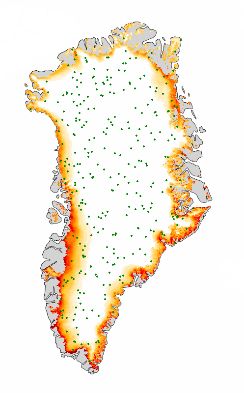
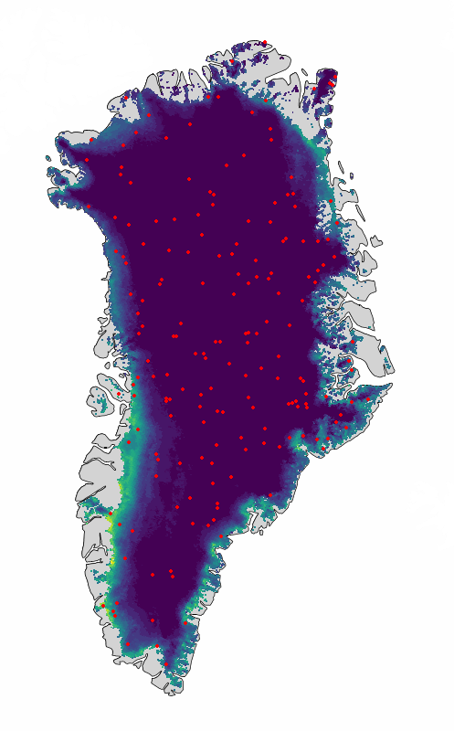

Models are DeepSensor ConvNPs (convolutional conditional neural processes) — a
set-convolution encoder maps sparse, irregularly located context observations onto a grid, a
U-Net processes that grid, and a decoder reads off a predictive distribution at target locations.
HIRHAM5 surface melt context points

→
ConvCNP
Train ~1 million parameters to maximise target probability
HIRHAM5 surface melt target points
